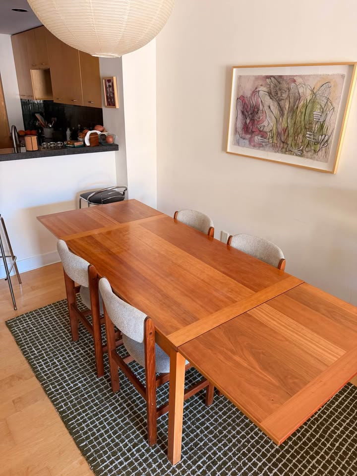
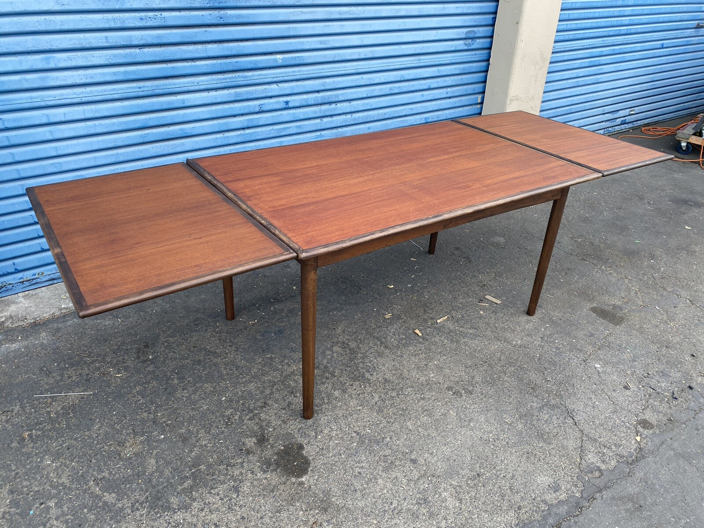
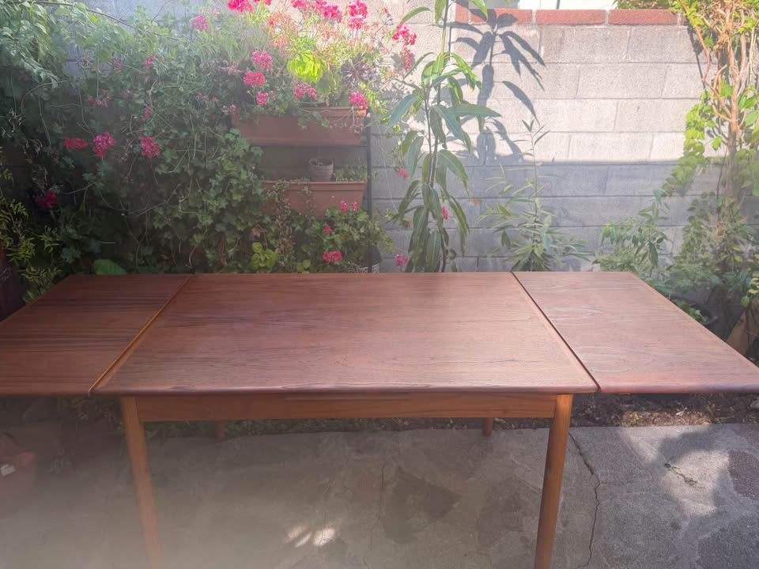

461 Anderson — Dining Table Watch
Mid-century modern · compact when closed, long when open — ~4 people day to day, 8 for guests · Danish teak/walnut preferred · leaves must blend in colour with the top · driveable from the Bay Area
Updated Monday, September 14, 2026 · Mon morning · SF $800 PENDING; Alameda $685 at-risk; Atherton → Sep 25–27New ranking rule (set Sep 9): shorter closed is better. Ideal ~51″ closed, ~54″ fine — the 50–54″ sweet spot ranks highest. Extended ≥84″ is the floor, 87″+ preferred. A compact table that opens to 90″ now beats a long-closed table that opens to 117″.
⚡ Look at right away
- ⚠ SF North Beach $800 +4 (53→92) — PENDING: Still on Marketplace but Facebook shows Pending; seller has arranged a pickup. Treat as likely gone unless you are the buyer. Was overnight #1 Tier A. FB listing.
- 🚨 Alameda $685 (?→87) — LIVE but at-risk: Still up (~16h); Made-in-Denmark stamp; 87″ extended; closed length still unstated. Listing already in Messenger discussion — move fast if you want it. Already pinged Sun evening. FB listing.
- 🚨 Tier A keepers still live: Hornslet Berkeley $500 (62.5→117) and SF Dyrlund $900 (65→88⅛) — already pinged. Hornslet CL · Dyrlund CL.
- ✅ CL re-verified (Mon morning): Hornslet $500, Ansager Mission $950 (updated ~1h ago), Dyrlund $900, Russian Hill $1,995, SR Ansager $800 amber all LIVE. WC $550 still gone. Palo Alto $580 ban listing still UP — do not promote.
- ✅ FB keepers live: Alameda $685 amber at-risk; Hayward $800; Emeryville $950 set; San Leandro $1,700; Skovby $1,600; Hayward Benny Linden $1,850; San Rafael $600/$800; Sausalito Benny Linden chairs $250 each. SF North Beach $800 Pending. SR Ansager FB not re-surfaced (CL amber still live). Gangsø $850 still live but DQ’d.
- 📅 Forward watches: Atherton MCM RESCHEDULED to Fri–Sun Sep 25–27 (was Sep 18–20 on Sun evening board — listing moved; address unlock Thu Sep 24 9am). Foster City YTT MCM still Fri–Sat Sep 18–19. Lafayette Grandson’s soft MCM Thu–Sat Sep 17–19. No Danish/teak extendable dining callouts.
- 📝 This pass (Mon Sep 14 ~9:00–9:40a PT): No new Tier A. SF $800 marked Pending; Alameda still live/at-risk. CL keepers unchanged. Atherton date correction. eBay local blocked (last known LIVE Sun morning: Fremont $1,795 + San Rafael $750). Fresh FB hits DQ’d (Berkeley $550 to 65″; SJ $295 to 71″; oak/cane). PA $580 ban stands.
Table alone ≤$2,000 · closed 50–54″ preferred (ideal ~51″) · extended ≥84″, 87″+ better · Danish teak/walnut/rosewood · four legs (no pedestal/trestle) · matching-wood leaves that blend in colour
Tables · sweet-spot closed (50–54″) — the new top of the board

Danish Teak Extendable Dining Table + 4 Chairs — North Beach
Was overnight Tier A — now Facebook Pending. Real Danish teak at 53″ closed → 92″ extended on two 19.5″ nest leaves, four square corner legs, matching leaves, plus four chairs, for $800. Seller has arranged a pickup; keep on board until confirmed gone, but do not drive expecting availability.
✔ Surface: matching-wood nest leaves. Leaves read with the top in the listing photos. No video this pass — still worth a daylight look before committing, but the dims and price are the story.

Mid-Century Modern Extendable Dining Table — just refinished
The first table this search has found that hits your stated ideal closed length exactly: 51″ closed, two 19½″ leaves, 90″ fully open. Compact enough that four people are not eating at a banquet table on a Tuesday, and 6″ past the floor with guests. It is also the only table here whose leaves genuinely match the top — and it has already been refinished, so there is no project. Held to four stars by price and provenance, not by the table.
✔ Surface: refinished, and the leaves blend. Downloaded the extended photo at full resolution and looked at the seams. Both leaves are in, and the tone carries straight across — no pale centre, no darker ends, no milky haze. There is normal board-to-board figure and nothing more. Against the rest of this board, where nearly every card carries a leaf-colour caveat, this one has nothing to fix.

Danish Modern Teak Draw-Leaf by Ansager Møbler
Under the new rule this is the table the board has been undervaluing. 53″ closed → 93″ open is a near-perfect fit for the brief, it is a stamped priority Danish maker, the top has already been professionally refinished to like-new, and it costs $950. CL re-verified live this morning (Fri Sep 11): updated today 7:51a PT; originally posted Aug 12.
⚠ Surface: the best top here — and the one leaf mismatch a refinish already failed to fix. On scratches nothing on this board is close: fully refinished, hand-rubbed oil, graded like-new, zero work. But the seller still writes that the two stored leaves have “a slightly different hue from being stored away.” That survived a professional refinish, so treat it as permanent rather than a $300–600 fix. It is the one card where the photos genuinely cannot settle it — go and look at it with the leaves out.
Vintage Danish Modern Teak Extension Dining Table
Morning marked this gone; noon FB click found it still live. Made in Denmark teak, 53″→93″ on four tapered legs — same sweet-spot length class as the SF Ansager, at roughly half to two-thirds the money. Stale (~16 weeks) and the price conflict needs a call before you drive.
⚠ Surface: water-ring haze / darker spots — plan a refinish, ~$300–600. Solid teak + teak veneer noted. Leaves not fully photo-proven for colour match in this pass — ask for one extended shot in daylight.

Vintage Danish Extendable Dining Table
Back on the board Sun morning after overnight Sep 11–12 looked gone. A Made-in-Denmark table at 53″→92″ with the arithmetic spelled out, four square legs, underside stamp photographed, and table-only at $800. Everything about the numbers is right. The top is the problem, and it is a veneer, so the fix is limited.
⚠ Surface: a scuff-and-recoat project, not a wipe-down. The seller’s photos are shot in direct sun — effectively raking light — and the top shows a dense field of fine white scratch lines across both the leaf and the centre panel, far more than “a few,” plus a milky haze. That haze is worn original lacquer, not dry oil, and oil will not penetrate it. The honest fix is a scuff-and-recoat (~$150–300, or a careful weekend), which is veneer-safe because it never reaches bare wood — but it may not lift the deepest lines, and a full strip is not advisable: the edge banding and ply line along the rim confirm a veneered top. Leaf colour also softens in the sun: in the hero the leaves match, in raking light both read lighter than the centre.

Vintage Danish Teak Rectangular Dining Table (2 Leaves)
On the measuring tape this is almost the brief in one line: 50″ closed → 94.5″ open — a hair under your ~51″ ideal, and 7.5″ past the comfortable-eight mark. Four tapered legs and matching-wood draw-leaves are photo-confirmed extended. Held to 3.5 stars by price and provenance: it sits $45 under the hard ceiling with no maker named.
✔ Surface: leaves read with the top when extended. Extended photos show both draw-leaves in; tone carries across the seams without an obvious pale-leaf problem. Not refinished, so expect normal vintage wear rather than San Leandro’s wipe-clean top.

Vintage Danish Teak MCM Dining Set — table + 4 chairs
Restored Sun morning after overnight Sep 11–12 looked gone. This is the same Emeryville table that has sat at the bottom of the page for six weeks with one objection against it — never photographed assembled — and the seller has now re-posted it set up, in direct sun, with four chairs, at $950 instead of $1,250. The objection is gone, the price is down, and the closed length turns out to be right in the sweet spot.
✔ Surface: finally photographed, and it holds up in raking sun. Downloaded the new hero at full resolution. Shot in direct sunlight — the same conditions that exposed the haze and scratch field on the Hayward $800 — this top reads even, warm and clean: consistent honey teak across all boards, crisp edge banding, no milky clouding, no scratch field. Shown closed, so the leaves are still untested for colour; that is the one thing left to check, and it is a phone call.

Skovby Walnut Extendable Dining Table + 6 Chairs
A Skovby — priority Danish maker — at 55″→102½″, on four clean square tapered legs, plus six chairs, for $1,600. At 55″ closed it is only an inch outside the sweet spot, which keeps it the highest-ranked of the long-closed group. Two photographs would settle whether it belongs at the top of the page or the bottom.
❓ Surface: unknown, and there is a veneer flag. Every photo shows the table closed, so the leaf colour is untested — and on a pull-out of this design the sections live under the top and are the likeliest here to have stayed pale. The condition note is a soft “wear consistent with age.” Compounding it, the listing says “walnut-toned wood” rather than solid walnut, which usually means veneer — and veneer is what makes scratches unrepairable. Ask PlaceMakers for one photo fully extended and one close-up of the top.

Danish Modern Teak Draw-Leaf — Restored (GP Farum)
$1,795 or Best Offer · table alone · free local pickup, Fremont
Same closed-length class as the Skovby (55″), opens to a comfortable 98.5″, and carries a real Made in Denmark / GP Farum stamp — but it has been on eBay since Oct 2024, the top was flip-refinished after a prior owner sanded through the veneer, and $1,795 is a lot for a long-closed restored table next to the Skovby bundle.
⚠ Surface: flip-refinish, not original teak colour. Prior owner belt-sanded through the veneer; seller flipped the panels (claims both faces were finished) and refinished to a darker satin that is deliberately not bright orange Danish. Leaves read slightly lighter / more amber than the centre. Label photo still shows sanding dust and small open holes. Wood copy conflicts (teak vs teak+ash vs item-specifics mahogany/ash).

Midcentury Danish Teak Draw-Leaf Table + 6 Chairs
The most complete room on the board and the cleanest top of any pick — 57″→96″ on four tapered legs with six matching Benny Linden chairs in stain-free cream fabric, no recovering project. It led the board a week ago. It falls here because 57″ closed is guest-sized on a Tuesday and because “+ Tax” takes it to ~$2,050, over the ceiling.
✔ Surface: clean and even; leaves blend. Zoomed in, this is the glossiest, most even top of any pick — figured grain, no clouding, no visible scratch field. Both leaves are out in the photo and carry the tone across. Nothing to refinish. The reservations here are money and closed length, not surface.

Hornslet Møbelfabrik MCM Extending Dining Table
Price drop today: a genuine Hornslet Møbelfabrik, Made in Denmark, reaching 117″ — the longest table this search has ever verified — now $500 (was $800 this morning). Cheapest named Danish four-leg on the board. Closed length is still the ranking penalty at 62.5″.
⚠ Surface: top wear, leaves richer than the centre — one refinish, ~$300–600. The seller is frank that the top shows wear, and the photos confirm a duller, blotchier centre field while the pulled leaves keep a deeper honey tone — the usual light-exposure split on a draw-leaf. Hornslet factory teak is the confident sand-and-re-oil lane.

Midcentury Danish Parsons Dining Table — Dyrlund tri-wood
The Friday Tier A: a named Danish maker at $900 that clears every hard rule. Dyrlund, Made in Denmark, four solid rosewood legs that unscrew by hand, under-mounted leaf taking it from 65″ to 88⅛″. Posted yesterday. It sits in the long-closed group because 65″ is everyday-long — but on maker + price it beats most of the board.
⚠ Surface: water-ring haze and stains — plan a refinish, ~$300–600. Close-ups show cloudy white rings and blushing in the lacquer across the striped rosewood/teak/walnut top. Veneer/tri-wood means a careful refinish, not aggressive sanding. Leaf stores underneath; extended colour match not photographed fully — ask for one extended shot.

Teak Draw-Leaf Dining Table, Danish, circa 1960
Cheapest per inch by a wide margin, Denmark stated as country of origin, free local pickup, and Best Offer enabled — it was the board’s #1 yesterday on 114″. But at 72″ closed it is the longest-when-closed table here by nearly ten inches, and 72″ is longer closed than several picks are open enough for six. Against a brief of four people day to day, that is the wrong shape at any price.
⚠ Surface: leaves read close, one edge ding, tone darker than most teak here. In the extended shot both draw-leaves carry the same reddish-brown tone as the centre — closer than Los Altos. The disclosed flaws are specific rather than vague: a chip on the edge and a couple of stains, both photographed. Solid teak, so both are a normal sand-and-re-oil; edge damage is the one thing that can need a filler. The top also photographs noticeably darker than the honey teak elsewhere — ask whether it has been stained.
Tables · amber — pending, demoted

Made in Denmark Extendable Dining Table — Alameda
Tier A already pinged on maker + extended length + price; closed length still unstated (amber). Mon morning: still LIVE but Messenger discussion / at-risk — treat as fragile. Made in Denmark stamp photographed; wood not named (looks teak); four corner legs; like-new.
❓ Surface / leaves: like-new overall; leaf colour match not fully settled from this pass. Ask for one daylight shot closed and one with both leaves out, plus the closed length.

Ansager Møbler Danish Teak Extendable Dining Table
A labelled and stamped Ansager Møbler — priority Danish maker — for $800, photographed fully open on four square tapered legs. It would be a five if the listing said how long it gets. It doesn’t, and now it has been ~14 days. CL bumped 5:33p PT this evening — length still blank.
⚠ Surface: pale leaves + “typical surface wear” — one refinish, ~$300–600. The driveway photo shows it fully open with the right-hand leaf clearly paler than the centre. Solid teak, so the fix is safe and $800 absorbs it. The unresolved problem is not the finish.
How they compare in one line each — closed length first: SF North Beach $800 +4 — 53→92 PENDING. San Leandro $1,700 — 51→90, ideal closed, refinished, leaves match. SF Ansager $950 — 53→93, stamped priority maker; leaf hue mismatch. San Rafael $600 (53→93) — still live; price conflict. RESTORED Hayward $800 — 53→92, Denmark stamp; veneer/haze. Russian Hill $1,995 — 50→94.5, best dims; near ceiling, no maker. RESTORED Emeryville $950 +4 — 54→94, widest top. Skovby $1,600 +6 — 55→102½. Fremont eBay $1,795 — 55→98.5, GP Farum. Hayward $1,850 +6 — 57→96. Hornslet $500 — 62.5→117. Dyrlund $900 — 65→88⅛. eBay San Rafael $750 — 72→114. Alameda $685 — ?→87 Made-in-Denmark, LIVE/at-risk (amber). SR Ansager $800 — amber (bumped 5:33p, length still blank). SF Gangsø $850 DQ’d — tape ~60–66 open (afternoon promote was wrong). Still gone: WC $550, Los Altos $850, SF chairs $900.
Monday morning: SF North Beach $800 +4 marked Pending (pickup arranged). Alameda $685 still LIVE but Messenger at-risk. No new Tier A. CL keepers LIVE (Ansager Mission bumped ~1h). Atherton MCM RESCHEDULED Sep 25–27 (was Sep 18–20). Foster City still Sep 18–19; Lafayette soft Sep 17–19. eBay unverified (403). Fresh FB DQs only. PA $580 ban stands.
Sunday evening: NEW Tier A SF North Beach $800 (53→92) +4 chairs to #1; NEW Alameda $685 (?→87) amber length-pending; SF Gangsø $850 hard DQ on evening tape re-read (~60–66 open). Keepers live (Hornslet $500, Dyrlund $900). Atherton MCM still Sep 18–20 (corrects afternoon Sep 25–26). PA $580 ban stands.
Sunday morning: Restored Hayward $800 (53→92) and Emeryville $950 (54→94) to the board after FB click-verify. No hours-fresh Tier A. Keepers live (Hornslet $500, Dyrlund $900 already pinged). Leaders were San Leandro $1,700 / SF Ansager $950 / San Rafael $600 before the evening Tier A. Same-day tip: San Leandro MCM garage sale until 2p (expired). Atherton MCM Sep 18–20 forward watch. Palo Alto $580 ban stands.
Gone in the last 30 days
Walnut Creek Danish teak draw-leaf, $550 (Walnut Creek) — gone Sat Sep 12 afternoon. CL deleted (48⅛→87, most compact / cheapest table-alone). Los Altos Danish Control teak, $850 (Los Altos) — sold Sat Sep 12 (FB); 59→106, photographed Danish Control medallion; was best-provenance card.
Palo Alto MCM teak + 6 chairs, $580 (Palo Alto) — removed Sep 8. Not sold: pulled as fake / no-reply after Ray emailed and got no answer. It was #1 for two days. Standing ban — do not re-promote if it resurfaces.
Emeryville Danish teak set, $950 +4 chairs (54→94) — marked gone overnight Sep 11–12; restored Sun Sep 13 morning (FB set + table-only twin both live).
San Rafael Danish extension, $600 (53→93) — marked gone morning Sep 12; found still live noon (FB item 1588757765557858); restored to board.
Hayward Made-in-Denmark extension, $800 (53→92) — marked gone overnight Sep 11–12; restored Sun Sep 13 morning (FB item 1835239281228256; Denmark stamp photographed).
Set of 6 Scandinavian/Danish-style chairs, $900 (SF) — sold overnight Sep 11–12; was Pending Fri evening.
Farstrup/Harlev six Danish chairs, $1,200 (San Rafael) — not re-found midday Sep 11; removed from Chairs board. Was the only Made-in-Denmark workshop set of six this search had.
Made-in-Denmark draw-leaf, $1,200 (Petaluma) — gone mid-August, three days after posting. 90.5″ extended, four tapered legs, photographed extended. The template for the tier-A rule: dimensioned, Danish, under $1,300, and it cleared in under a week.
Ansager Møbler XL, $1,700 (SF Mission) — deleted by its author in late August. 112″ × 48″, the largest table this search ever found. Same seller as the current SF Ansager $950.
Skovby cherry oval, $1,200 (Oakland) — marked out of stock in late August. 110″ extended, priority maker.
Set of 8 Danish teak chairs, free delivery, $1,600 (San Rafael) — sold. The only set of eight this search has seen.
Set of 8 D-Scan teak chairs, $1,000 (Richmond) — sold.
Set of 6 Danish-style teak by Sun Furniture, $750 (Berkeley) — sold.
Six Danish Modern teak, reupholstered purple, $1,000 (SF) — deleted.
Pattern to keep in mind: everything here that was Danish, dimensioned and under $1,300 was gone inside a week. The Hornslet just re-entered that lane at $500 (was $800) — Danish, dimensioned, under $1,300 — so expect it to move fast if the top wear is acceptable.
Ruled out this evening pass: SF Gangsø $850 — still LIVE, but evening tape re-read shows extended only ~60–66″ (readable ~64–65), not ~94–95; sub-84 hard DQ (afternoon promote was wrong). Ruled out this afternoon pass: Larkspur teak+4 $750 (40→80 — sub-84 DQ). Santa Rosa Danish set $1,200 (53→93.5) — watch only until wood named. Ruled out this noon pass: SF Danish teak $2,250 (55→94.5, four round legs, no maker) — over $2,000 publish ceiling; not a priority-maker soft-alert. Mission pull-out $1,695 (49→83) — standing sub-84 DQ. SF Scandinavian teak trestle/pedestal set $600 — hard base DQ. Kentfield Anderson Genuine Teak $450 — outdoor trestle + umbrella hole. Stockton Danish teak +6 $850 — outside Bay drive. Danish Modern walnut square $1,095 — 46.5″ square; leaves “not walnut.” Dyrlund oval Berkeley $2,100 — pedestal + over ceiling. Prior: Vintage Danish Teak Square Dining Table $1,250 (SF, Stuff by Luxe, just listed) — 35½″→67″ only; DQ on extended length. Gudme Møbelfabrik extendable by Niels Otto Møller $1,850 (Aptos) — priority maker and a Danish Furnituremakers’ Control mark, teak, like-new, leaves stated to match — but the base is a splayed star pedestal, photo-confirmed this run. Hard DQ. Flagged here in case you ever want to open a round/pedestal exception lane, because on every other axis it is excellent. Drexel Declaration walnut $1,750 (San Rafael, just listed) — American maker. eBay local pickup (evening): San Rafael $750 still live; NEW Fremont $1,795 (55→98.5) added to board. Other local hits were pedestal/freight/far or non-Danish. Facebook post/group search: the only Danish extendables surfacing were Los Angeles and Puyallup WA, plus a 67″ unit. EstateSales.net: 23 sales within 30 miles over the next 15 days, none advertising Danish, teak or MCM dining furniture in their titles.
Standing ruled-out (unchanged): Stanley $750 SF (American). Novato $1,750 (pedestal/trestle). BRDR Furbo $800 SF (length issues / historic DQ). SF Gangsø $850 — still LIVE; evening tape re-read ~60–66 extended (afternoon ~94–95 promote was wrong); sub-84 hard DQ / standing ruled-out. Richmond $915 (no dimensions after weeks). Dyrlund $1,700 Hayward (ceramic-tile inlay + trestle). Meredew, McIntosh, Nathan, Remploy, G-Plan and other UK imports. E. Valentinsen $1,175 and Gudme rosewood $700 (twin-pedestal). Gudme $550 Santa Rosa and John Keal $975 (round on a pedestal). Vejle Stole $1,995 SF (priority maker, only 76″). Sonoma Skovby $800 (twin pedestal, peeling veneer). Ansager square draw-leaf $650 Walnut Creek (67″). SF pull-out-leaf $1,695 (83″). Millbrae $799 (arched trestle). Los Gatos $1,000 (78″). Albany $1,000 (67″). Alameda $1,250 (72″ max, laminate). Fremont $450 (made in Singapore). El Cerrito $1,150 (two gate-leg tables). Roseville, Modesto, Sacramento and Stockton listings (outside the drive radius or no dimensions). Castlery, West Elm, Crate & Barrel (current retail). Heywood-Wakefield $895 (American).
Watchlist (soft tier, $2,001–$2,300, priority makers only): the Gudme Møbelfabrik walnut expandable, $2,050 (Folsom — 63¼″→101½″, original table pads, delivery included) remains outside the Marketplace radius and the SF Bay Craigslist region and still cannot be re-verified from here. Its listing ran to roughly Sep 11, so it may already be gone — and at 63¼″ closed it now fails the ranking rule as well as the ceiling. Treat it as closed. Nothing new entered the soft tier this run.
⚡ Chairs — quick read
- 🚫 SF $900 six — sold overnight (was Pending Fri evening). Farstrup/Harlev six @ $1,200 already gone since midday Fri.
- ⚠ Sausalito seven Benny Linden still $250 each ($1,750 set) — only standalone set of 6+ left on the board; Danish in style only.
- 🏆 Tables that include seating (best chairs path): Hayward $1,850 (+6 clean Benny Linden), Redwood City Skovby $1,600 (+6, stained). Emeryville $950 +4 restored.
- 💭 Still no standalone set of eight. Six-from-a-table-bundle, or Sausalito seven, remain the realistic routes.
Budget $1,200–$2,400 for six · MCM teak/walnut that coordinates with the table · easy, clean fabric · driveable / delivers
Chairs · sets of 6+ · in budget

7 Benny Linden Teak Dining Chairs — Set of 7
Evening re-read of the listing: “As-is (with touchups): $250 each” for a sold-as set of seven — $1,750 total, not $250 for the lot. Tall spindle backs and pale cushions still look right next to teak, and seven is still the only count above six, but at $250 a seat this is mid-budget furniture, not a bargain. Danish-modern style only; not a Danish workshop.
Chairs · partial sets worth a look

Four Danish Modern Teak Dining Chairs
Solid old-growth teak, cleaned, oiled and newly reupholstered in green wool — like-new, nothing to do. Four stars’ worth of quality at a three-star count: four chairs do not furnish a table that seats eight.
The trade-off in one line: SF $900 six sold. Farstrup six @ $1,200 already gone. Sausalito seven @ $250 each ($1,750) is the only standalone 6+ left. Prefer table+chairs bundles: Hayward $1,850 (+6 clean), Redwood City Skovby $1,600 (+6 stained). Emeryville $950 +4 restored to Tables board.
Seen but set aside: Mid-1960s D-Scan teak, 3 chairs ($300, Novato) — only three, fair, Singapore-made. Set of 4 Danish Teak Windsor-style ($275) — four only, and Windsor rather than Danish-modern. Set of 6 by Sun Furniture ($750, Berkeley) — sold. Six Danish Modern teak, reupholstered purple ($1,000, SF) — deleted. Four Henning Kjærnulf for Vejle Stole Møbelfabrik ($900, Richmond) — priority maker, but only four at $225 each. Set of 8 D-Scan teak ($1,000, Richmond) — sold. Four D-Scan teak ($600, Santa Rosa) — gone. Set of 8 Danish teak, free delivery ($1,600, San Rafael) — sold. Set of 6 D-Scan teak ($1,200, Novato) — pricier per chair and not Danish-made. Six H.W. Klein for Bramin ($2,795, Richmond), Johannes Andersen teak 6 ($2,650), six vintage MCM Danish teak ($1,700, SF) — over the ceiling or over $250 a chair. Nathan teak 6 ($1,280, SF) — UK import. Sunnyvale MCM arm chairs ($400) — grey tweed, not teak-toned. Floral-upholstered 6 ($2,400) — busy fabric.